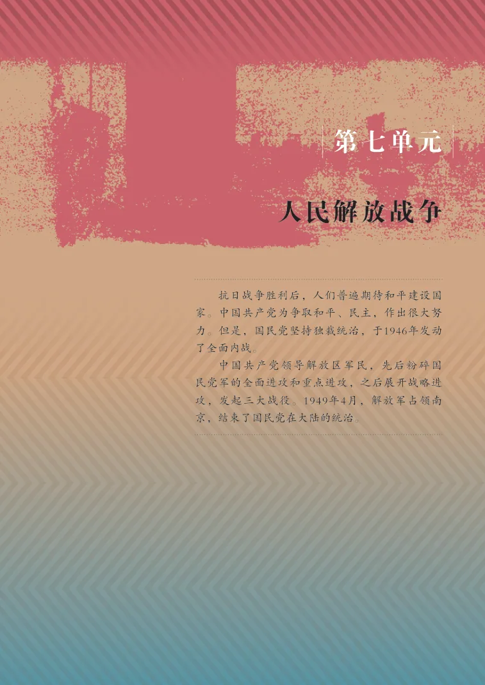
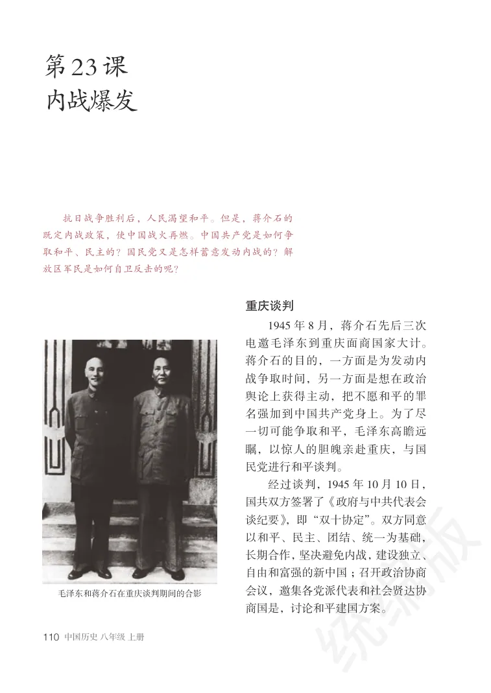
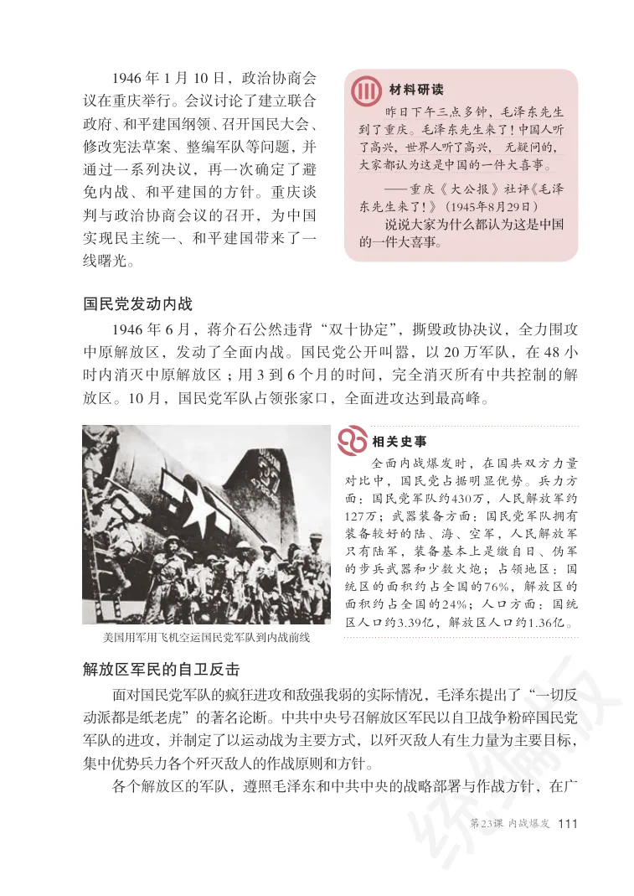
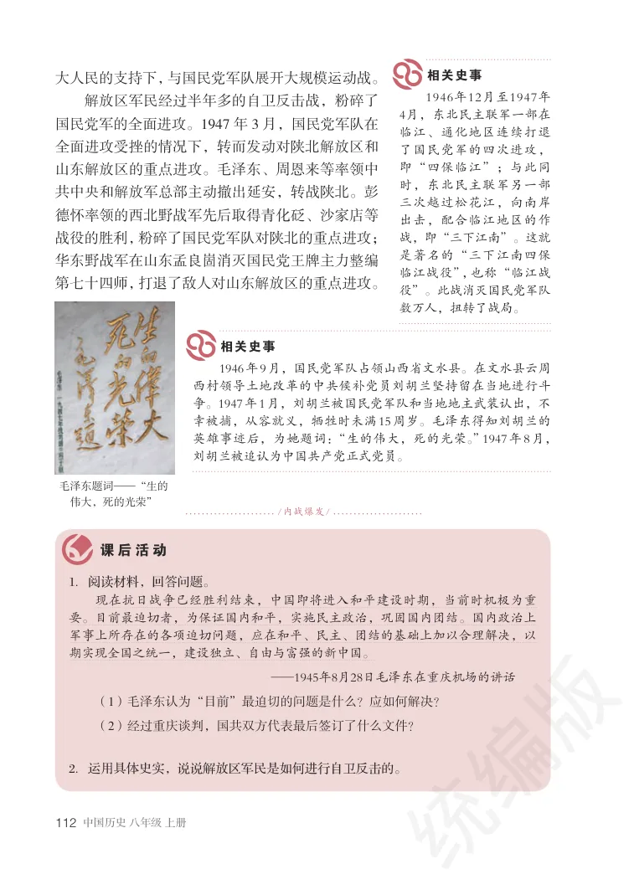
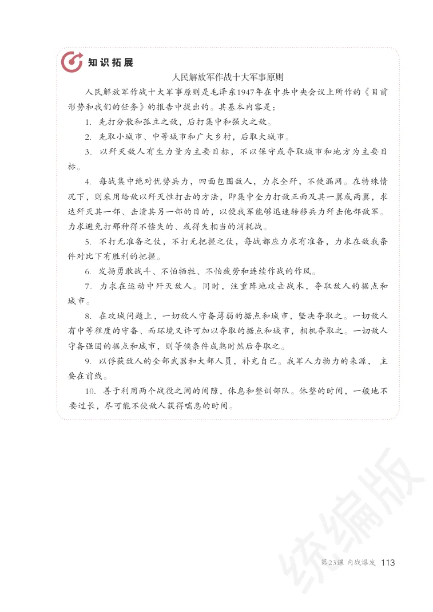
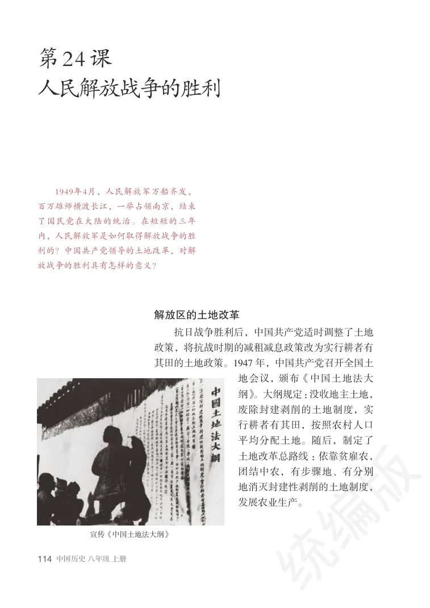
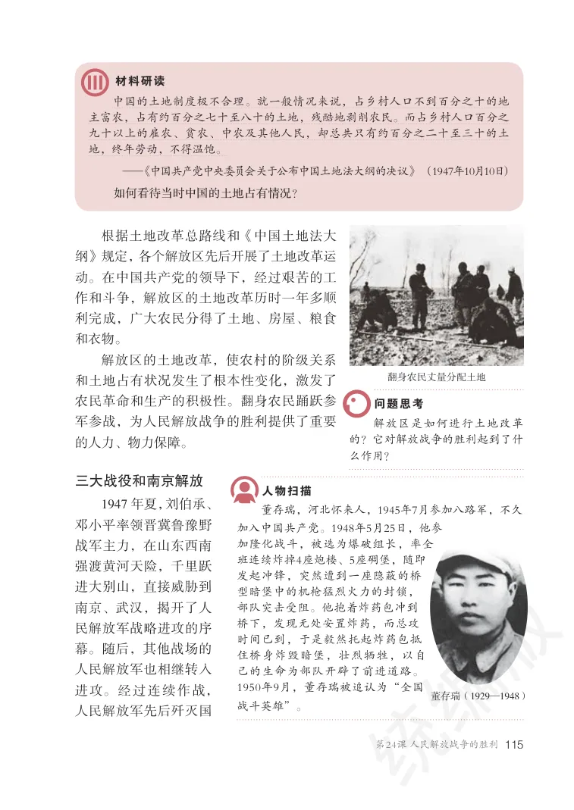
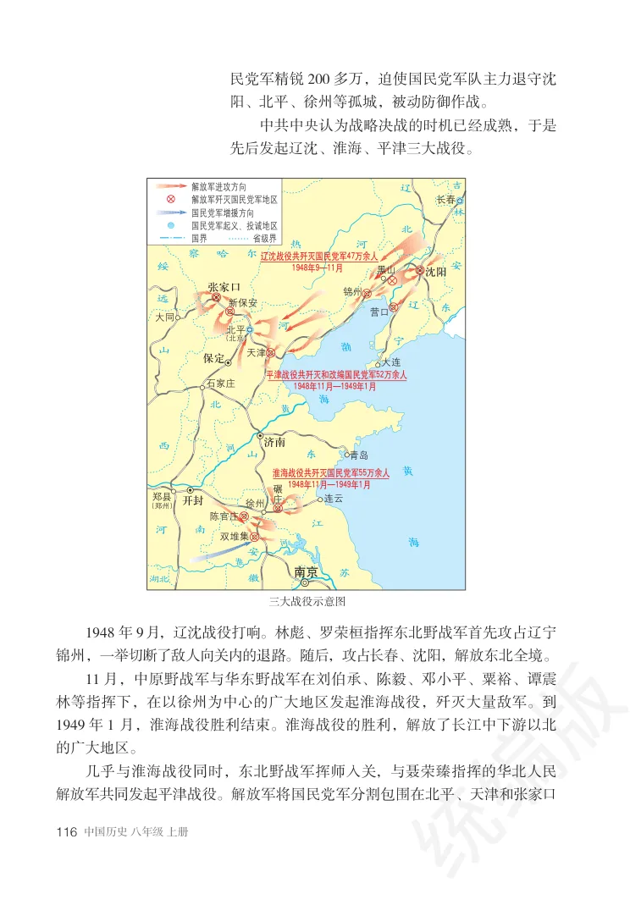
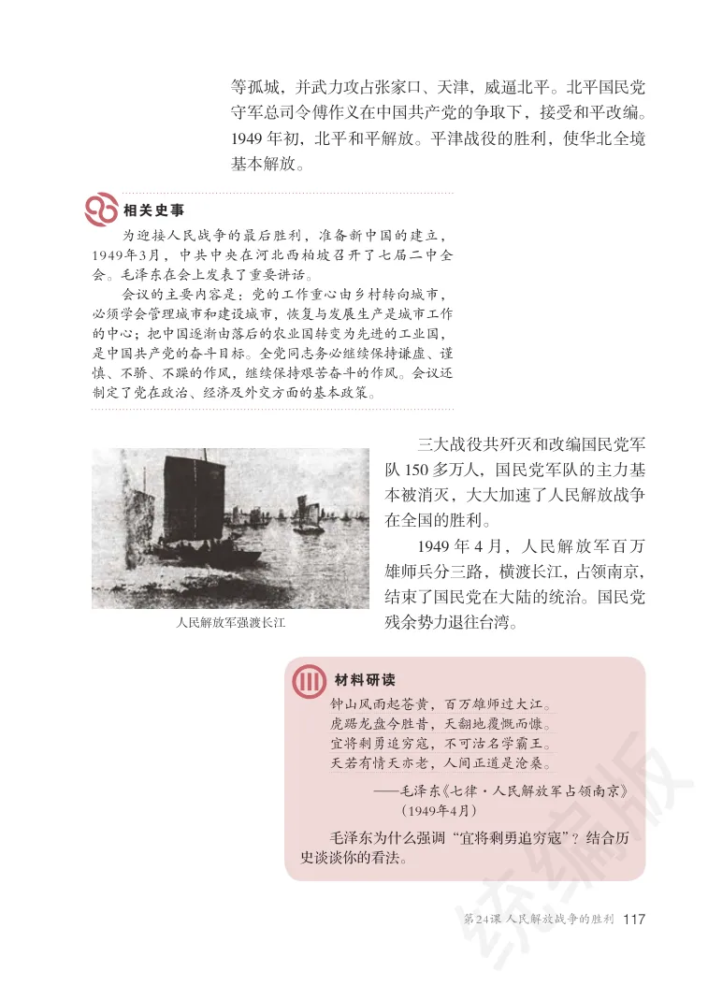
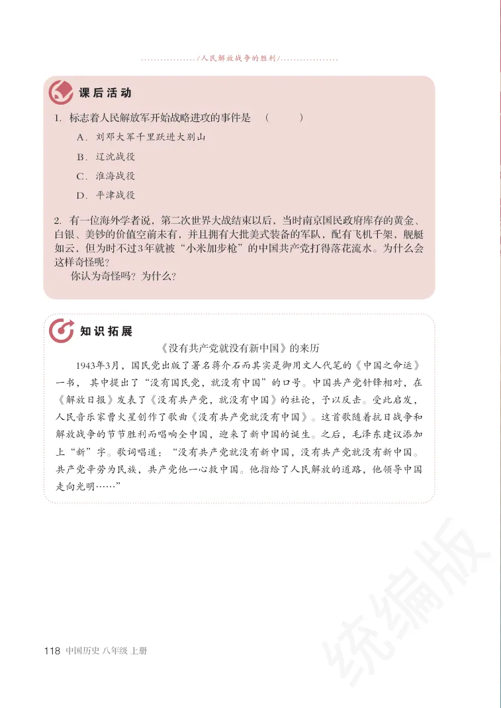

第七单元
人民解放战争
抗日战争胜利后，人们普遍期待和平建设国家。中国共产党为争取和平、民主，作出很大努力。但是，国民党坚持独裁统治，于1946年发动了全面内战。
中国共产党领导解放区军民，先后粉碎国民党军的全面进攻和重点进攻，之后展开战略进攻，发起三大战役。1949年4月，解放军占领南京，结束了国民党在大陆的统治。
第 23 课
内战爆发
教材第 110 页 · PDF 第 115 页查看原书页面
抗日战争胜利后，人民渴望和平。但是，蒋介石的既定内战政策，使中国战火再燃。中国共产党是如何争取和平、民主的？国民党又是怎样蓄意发动内战的？解放区军民是如何自卫反击的呢？
重庆谈判
1945 年8 月，蒋介石先后三次电邀毛泽东到重庆面商国家大计。蒋介石的目的，一方面是为发动内战争取时间，另一方面是想在政治舆论上获得主动，把不愿和平的罪名强加到中国共产党身上。为了尽一切可能争取和平，毛泽东高瞻远瞩，以惊人的胆魄亲赴重庆，与国民党进行和平谈判。
经过谈判，1945 年10 月10 日，国共双方签署了《政府与中共代表会谈纪要》，即“双十协定”。双方同意以和平、民主、团结、统一为基础，长期合作，坚决避免内战，建设独立、自由和富强的新中国；召开政治协商会议，邀集各党派代表和社会贤达协商国是，讨论和平建国方案。
教材第 111 页 · PDF 第 116 页查看原书页面
美国用军用飞机空运国民党军队到内战前线
1946 年1 月10 日，政治协商会议在重庆举行。会议讨论了建立联合政府、和平建国纲领、召开国民大会、修改宪法草案、整编军队等问题， 并通过一系列决议，再一次确定了避免内战、和平建国的方针。重庆谈判与政治协商会议的召开，为中国实现民主统一、和平建国带来了一线曙光。
材料研读
昨日下午三点多钟，毛泽东先生到了重庆。毛泽东先生来了！中国人听了高兴，世界人听了高兴， 无疑问的，大家都认为这是中国的一件大喜事。—重庆《大公报》社评《毛泽东先生来了！》 （1945年8月29日）说说大家为什么都认为这是中国的一件大喜事。
相关史事
全面内战爆发时，在国共双方力量对比中，国民党占据明显优势。兵力方面：国民党军队约430万，人民解放军约127万；武器装备方面：国民党军队拥有装备较好的陆、海、空军，人民解放军只有陆军，装备基本上是缴自日、伪军的步兵武器和少数火炮；占领地区：国统区的面积约占全国的76%，解放区的面积约占全国的24%；人口方面：国统区人口约3.39亿，解放区人口约1.36亿。
国民党发动内战
1946 年6 月，蒋介石公然违背“双十协定”，撕毁政协决议，全力围攻中原解放区，发动了全面内战。国民党公开叫嚣，以20 万军队，在48 小时内消灭中原解放区；用3 到6 个月的时间，完全消灭所有中共控制的解放区。10 月，国民党军队占领张家口，全面进攻达到最高峰。
解放区军民的自卫反击
面对国民党军队的疯狂进攻和敌强我弱的实际情况，毛泽东提出了“一切反动派都是纸老虎”的著名论断。中共中央号召解放区军民以自卫战争粉碎国民党军队的进攻，并制定了以运动战为主要方式，以歼灭敌人有生力量为主要目标，集中优势兵力各个歼灭敌人的作战原则和方针。
各个解放区的军队，遵照毛泽东和中共中央的战略部署与作战方针，在广
教材第 112 页 · PDF 第 117 页查看原书页面
课后活动
1．阅读材料，回答问题。现在抗日战争已经胜利结束，中国即将进入和平建设时期，当前时机极为重要。目前最迫切者，为保证国内和平，实施民主政治，巩固国内团结。国内政治上军事上所存在的各项迫切问题，应在和平、民主、团结的基础上加以合理解决，以期实现全国之统一，建设独立、自由与富强的新中国。
—1945年8月28日毛泽东在重庆机场的讲话
（1）毛泽东认为“目前”最迫切的问题是什么？应如何解决？（2）经过重庆谈判，国共双方代表最后签订了什么文件？
2．运用具体史实，说说解放区军民是如何进行自卫反击的。
相关史事
1946年12月至1947年4月，东北民主联军一部在临江、通化地区连续打退了国民党军的四次进攻，即“四保临江”；与此同时，东北民主联军另一部三次越过松花江，向南岸出击，配合临江地区的作战，即“三下江南”。这就是著名的“三下江南四保临江战役”，也称“临江战役”。此战消灭国民党军队数万人，扭转了战局。
相关史事
1946年9月，国民党军队占领山西省文水县。在文水县云周西村领导土地改革的中共候补党员刘胡兰坚持留在当地进行斗争。1947年1月，刘胡兰被国民党军队和当地地主武装认出，不幸被捕，从容就义，牺牲时未满15周岁。毛泽东得知刘胡兰的英雄事迹后，为她题词：“生的伟大，死的光荣。”1947年8月，刘胡兰被追认为中国共产党正式党员。
大人民的支持下，与国民党军队展开大规模运动战。
解放区军民经过半年多的自卫反击战，粉碎了国民党军的全面进攻。1947 年3 月，国民党军队在全面进攻受挫的情况下，转而发动对陕北解放区和山东解放区的重点进攻。毛泽东、周恩来等率领中共中央和解放军总部主动撤出延安，转战陕北。彭德怀率领的西北野战军先后取得青化砭、沙家店等战役的胜利，粉碎了国民党军队对陕北的重点进攻；华东野战军在山东孟良崮消灭国民党王牌主力整编第七十四师，打退了敌人对山东解放区的重点进攻。
教材第 113 页 · PDF 第 118 页查看原书页面
知识拓展
人民解放军作战十大军事原则
人民解放军作战十大军事原则是毛泽东1947年在中共中央会议上所作的《目前形势和我们的任务》的报告中提出的。其基本内容是：
1．先打分散和孤立之敌，后打集中和强大之敌。2．先取小城市、中等城市和广大乡村，后取大城市。3．以歼灭敌人有生力量为主要目标，不以保守或夺取城市和地方为主要目
标。
4．每战集中绝对优势兵力，四面包围敌人，力求全歼，不使漏网。在特殊情
况下，则采用给敌以歼灭性打击的方法，即集中全力打敌正面及其一翼或两翼，求达歼灭其一部、击溃其另一部的目的，以便我军能够迅速转移兵力歼击他部敌军。力求避免打那种得不偿失的、或得失相当的消耗战。
5．不打无准备之仗，不打无把握之仗，每战都应力求有准备，力求在敌我条
件对比下有胜利的把握。
6．发扬勇敢战斗、不怕牺牲、不怕疲劳和连续作战的作风。7．力求在运动中歼灭敌人。同时，注重阵地攻击战术，夺取敌人的据点和
城市。
8．在攻城问题上，一切敌人守备薄弱的据点和城市，坚决夺取之。一切敌人
有中等程度的守备、而环境又许可加以夺取的据点和城市，相机夺取之。一切敌人守备强固的据点和城市，则等候条件成熟时然后夺取之。
9．以俘获敌人的全部武器和大部人员，补充自己。我军人力物力的来源， 主
要在前线。
10．善于利用两个战役之间的间隙，休息和整训部队。休整的时间，一般地不
要过长，尽可能不使敌人获得喘息的时间。
第 24 课
人民解放战争的胜利
教材第 114 页 · PDF 第 119 页查看原书页面
1949年4月，人民解放军万船齐发，百万雄师横渡长江，一举占领南京，结束了国民党在大陆的统治。在短短的三年内，人民解放军是如何取得解放战争的胜利的？中国共产党领导的土地改革，对解放战争的胜利具有怎样的意义？
解放区的土地改革
抗日战争胜利后，中国共产党适时调整了土地政策，将抗战时期的减租减息政策改为实行耕者有其田的土地政策。1947 年，中国共产党召开全国土地会议， 颁布《中国土地法大纲》。大纲规定：没收地主土地，废除封建剥削的土地制度，实行耕者有其田，按照农村人口平均分配土地。随后，制定了土地改革总路线：依靠贫雇农，团结中农，有步骤地、有分别地消灭封建性剥削的土地制度，发展农业生产。
教材第 115 页 · PDF 第 120 页查看原书页面
材料研读
中国的土地制度极不合理。就一般情况来说，占乡村人口不到百分之十的地主富农，占有约百分之七十至八十的土地，残酷地剥削农民。而占乡村人口百分之九十以上的雇农、贫农、中农及其他人民，却总共只有约百分之二十至三十的土地，终年劳动，不得温饱。—《中国共产党中央委员会关于公布中国土地法大纲的决议》 （1947年10月10日）
如何看待当时中国的土地占有情况？
根据土地改革总路线和《中国土地法大纲》规定， 各个解放区先后开展了土地改革运动。在中国共产党的领导下，经过艰苦的工作和斗争，解放区的土地改革历时一年多顺利完成，广大农民分得了土地、房屋、粮食和衣物。
解放区的土地改革，使农村的阶级关系和土地占有状况发生了根本性变化，激发了农民革命和生产的积极性。翻身农民踊跃参军参战，为人民解放战争的胜利提供了重要的人力、物力保障。
解放区是如何进行土地改革的？它对解放战争的胜利起到了什么作用？
问题思考
三大战役和南京解放
1947 年夏，刘伯承、邓小平率领晋冀鲁豫野战军主力，在山东西南强渡黄河天险，千里跃进大别山，直接威胁到南京、武汉，揭开了人民解放军战略进攻的序幕。随后，其他战场的人民解放军也相继转入进攻。经过连续作战，人民解放军先后歼灭国
董存瑞，河北怀来人，1945年7月参加八路军，不久
人物扫描
加入中国共产党。1948年5月25日，他参加隆化战斗，被选为爆破组长，率全班连续炸掉4座炮楼、5座碉堡，随即发起冲锋，突然遭到一座隐蔽的桥型暗堡中的机枪猛烈火力的封锁，部队突击受阻。他抱着炸药包冲到桥下，发现无处安置炸药，而总攻时间已到，于是毅然托起炸药包抵住桥身炸毁暗堡，壮烈牺牲，以自己的生命为部队开辟了前进道路。1950年9月，董存瑞被追认为“全国战斗英雄”。
教材第 116 页 · PDF 第 121 页查看原书页面
解放军歼灭国民党军地区解放军进攻方向长春
淮海战役共歼灭国民党军55万余人1948年11月—1949年1月
平津战役共歼灭和改编国民党军52万余人1948年11月—1949年1月
辽沈战役共歼灭国民党军47万余人1948年9—11月
1948 年9 月，辽沈战役打响。林彪、罗荣桓指挥东北野战军首先攻占辽宁锦州，一举切断了敌人向关内的退路。随后，攻占长春、沈阳，解放东北全境。
11 月，中原野战军与华东野战军在刘伯承、陈毅、邓小平、粟裕、谭震林等指挥下，在以徐州为中心的广大地区发起淮海战役，歼灭大量敌军。到1949 年1 月，淮海战役胜利结束。淮海战役的胜利，解放了长江中下游以北的广大地区。
几乎与淮海战役同时，东北野战军挥师入关，与聂荣臻指挥的华北人民解放军共同发起平津战役。解放军将国民党军分割包围在北平、天津和张家口
民党军精锐200 多万，迫使国民党军队主力退守沈阳、北平、徐州等孤城，被动防御作战。
中共中央认为战略决战的时机已经成熟，于是先后发起辽沈、淮海、平津三大战役。
教材第 117 页 · PDF 第 122 页查看原书页面
为迎接人民战争的最后胜利，准备新中国的建立，1949年3月，中共中央在河北西柏坡召开了七届二中全会。毛泽东在会上发表了重要讲话。会议的主要内容是：党的工作重心由乡村转向城市，必须学会管理城市和建设城市，恢复与发展生产是城市工作的中心；把中国逐渐由落后的农业国转变为先进的工业国，是中国共产党的奋斗目标。全党同志务必继续保持谦虚、谨慎、不骄、不躁的作风，继续保持艰苦奋斗的作风。会议还制定了党在政治、经济及外交方面的基本政策。
相关史事
材料研读
钟山风雨起苍黄，百万雄师过大江。虎踞龙盘今胜昔，天翻地覆慨而慷。宜将剩勇追穷寇，不可沽名学霸王。天若有情天亦老，人间正道是沧桑。—毛泽东《七律·人民解放军占领南京》（1949年4月）
毛泽东为什么强调“宜将剩勇追穷寇”？结合历史谈谈你的看法。
三大战役共歼灭和改编国民党军队150 多万人，国民党军队的主力基本被消灭，大大加速了人民解放战争在全国的胜利。
1949 年4 月，人民解放军百万雄师兵分三路，横渡长江， 占领南京，结束了国民党在大陆的统治。国民党残余势力退往台湾。
等孤城，并武力攻占张家口、天津，威逼北平。北平国民党守军总司令傅作义在中国共产党的争取下，接受和平改编。1949 年初，北平和平解放。平津战役的胜利，使华北全境基本解放。
教材第 118 页 · PDF 第 123 页查看原书页面
课后活动
1．标志着人民解放军开始战略进攻的事件是（ ）
Ａ．刘邓大军千里跃进大别山Ｂ．辽沈战役Ｃ．淮海战役Ｄ．平津战役
2．有一位海外学者说，第二次世界大战结束以后，当时南京国民政府库存的黄金、白银、美钞的价值空前未有，并且拥有大批美式装备的军队，配有飞机千架，舰艇如云，但为时不过3年就被“小米加步枪”的中国共产党打得落花流水。为什么会这样奇怪呢？你认为奇怪吗？为什么？
知识拓展
《没有共产党就没有新中国》的来历
1943年3月，国民党出版了署名蒋介石而其实是御用文人代笔的《中国之命运》一书， 其中提出了“没有国民党，就没有中国”的口号。中国共产党针锋相对，在《解放日报》发表了《没有共产党，就没有中国》的社论，予以反击。受此启发，人民音乐家曹火星创作了歌曲《没有共产党就没有中国》。这首歌随着抗日战争和解放战争的节节胜利而唱响全中国，迎来了新中国的诞生。之后，毛泽东建议添加上“新”字。歌词唱道：“没有共产党就没有新中国，没有共产党就没有新中国。共产党辛劳为民族，共产党他一心救中国。他指给了人民解放的道路，他领导中国走向光明……”
SOURCE PAGES
原书页面与插图
按单元导语和各课分组，点击页面可查看大图。
单元导语
返回正文 ↑
第23课 内战爆发
返回正文 ↑



第24课 人民解放战争的胜利
返回正文 ↑




继续使用页眉中的“下一单元”进入后续内容。